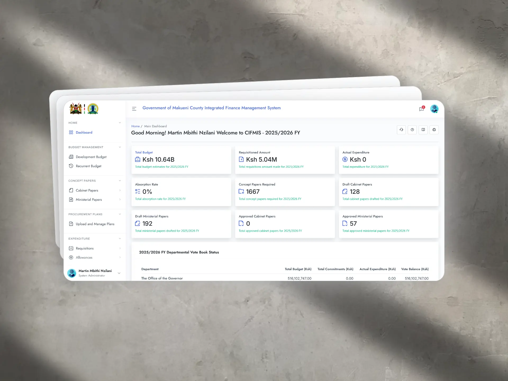

Public finance

County government · 2023 to present
CIFMIS, County Integrated Financial Management
Government of Makueni County
- Problem
- County departments each plan budgets, commit spend and collect revenue, and all of it has to reconcile into one auditable picture for treasury and oversight bodies. Spreading that across disconnected records makes reporting slow and reconciliation manual.
- Solution & role
- Engineered and maintained the backend services and underlying data model for budgeting and expenditure workflows. Architected RESTful APIs integrating with banks and payment gateways so transactions flow in without re-keying, and optimised SQL queries to keep reporting responsive as the ledger grows.
- Impact
- Budget planning, commitments and revenue collection reconcile into a single auditable record for treasury and oversight bodies, with bank and gateway transactions captured automatically rather than re-entered by hand.
- Technology